ex można wyliczyć zakładając, że a=1 i przez jedną jednostkę czasu przesówać a z prędkością a*x. Po zakończeniu procedury a będzie równe ex
można to wyliczyć numerycznie równaniem (1+x/n)n. Przybliżenie będzie dokładniejsze, im większe będzie n.
W skrócie wynika to z tego, że pochodna z wyrażenia et*x wzgędem zmiennej t jest równa x*(samo to wyrażenie). Dzięki temu możemy wyliczyć ex algorytmem z pierwszej linijki.
Dogłębie jest to wyjaśnione w tym filmie:
Tak wyglądałoby to dla x=1. a ląduje na e1 czyli mniej więcej 2.718

A tak dla x=1+1i, Tutaj a ląduje na e1+1i, czyli 1.4687+2.2874i

jeśli część rzeczywista x jest ujemna ex będzie zbliżać się do 0, tutaj przykład dla x= -2+4i
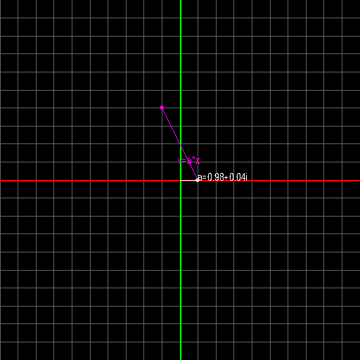W tym przykładzie widać również, że kąt pomiędzy ex a osią liczb rzeczywistych jest równy (w radiansach) częśći urojonej x
Można z tego wywnioskować, że jeśli część urojona liczby jest równa π, ex będzie rzeczywistą liczbą ujemną. Stąd jedno z piękniejszych równać w matematyce: eπi=-1
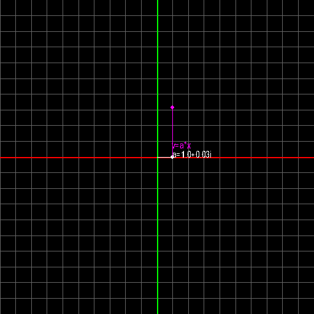Wiedząc, że część urojona x odpowiada bezpośrednio kątowi pomiędzy ex a osią liczb rzeczywistych, można dojść do tego, że dodanie dowolnej wielokrotności 2πi do x nie powinno zmienić wartości ex
oto wizualizacja ex dla kolejno x=ln(5), x=ln(5)+2πi i x=ln(5)+4πi
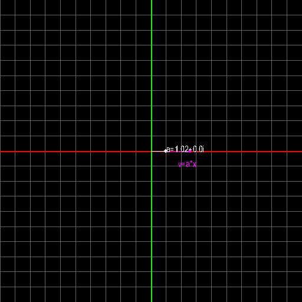 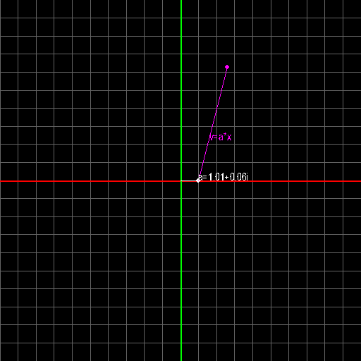 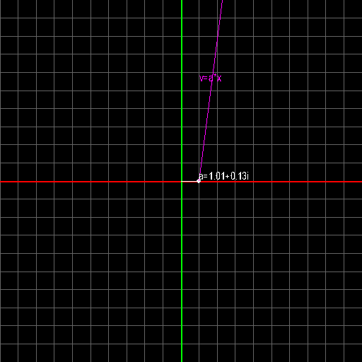Pozwalaliśmy punktowi a przemieszczać się jedną jednostkę czasu. Co stałoby się gdyby punkt przemieszczał się 2 jednostki czasu?
Tutaj przykład dla x=ln(-2+1j)
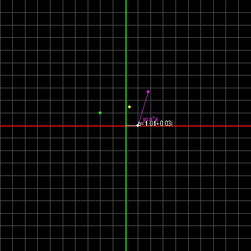Po 2 jednostkach czasu a ląduje na (-2+1i)2, czyli 3-4i. Można zauważyć też, że w połowie drogi mija samo -2+1i (zaznaczone na zielono) i w 1/4 drogi mija (-2+1i)1/2, czyli pierwiastek kwadratowy z -2+1i (zaznaczone na żółto)
Zwiększenie czasu przesówania się punktu a jest równoznaczne ze zwiększeniem prędkości, czyli danie 2 jednostek czasu na przesówanie się punktu a jest równoznaczne z pomnożeniem x przez 2
Gdy rozważymy jedną z zasad potęg: ebx=(ex)b można zrozumieć, czemu pomnożenie x przez 2 powoduje podniesienie wyniku do potęgi 2
W tym wypadku wygląda to tak: e2*ln(-2+1i)=(eln(-2+1i))2=(-2+1i)2=3-4i
Rozważmy ponownie przypadek z x=ln(5), x=ln(5)+2πi i x=ln(5)+4πi. Pomnóżmy wszystkie te liczby przez 0.5, co powinno podnieść 5 (ex) do potęgi 0.5
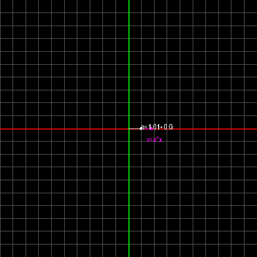 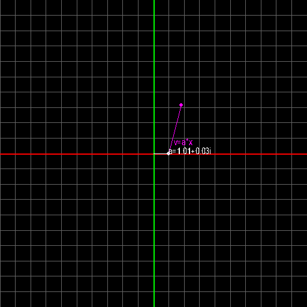 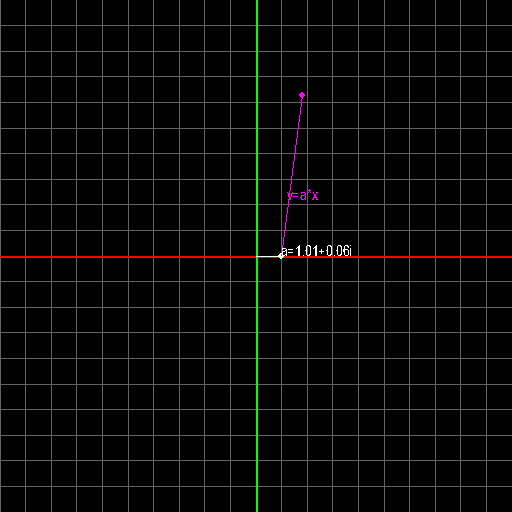Dostajemy 2 różne wyniki, z czego pierwszy się powtarza: 2.23 i -2.23 obie te liczby podniesione do potęgi 2 dadzą 5. Gdyby do x przed pomnożeniem przez 0.5 dodać inne wielokrotności 2πi wynik zawsze byłby jedną z tych liczb
Działałoby to również gdyby zamiast 0.5 jako wykładnika użyć np. 1/69. Wtedy otrzymalbyśmy 69 różnych wyników, w zależności od wybranej wielokrotnośi 2πi. Wszystkie z nich podniesione do potęgi 69 dałyby 5
Jeśli można tą metodą 5 podnieść do potęgi 0.5 nic nie stoi na przeszkodzie, by zamiast tego jako wykładnika użyć i
tutaj również trzeba mieć na uwadze, że do wykładnika można dodać wielokrotność 2πi
Tak wygląda wizualizacja kolejno e(ln(5)-2πi)*i, e(ln(5))*i i e(ln(5)+2πi)*i
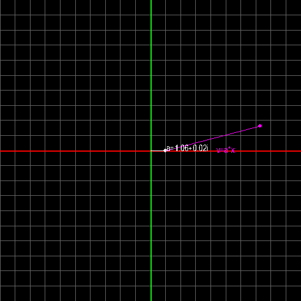 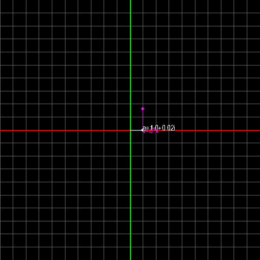 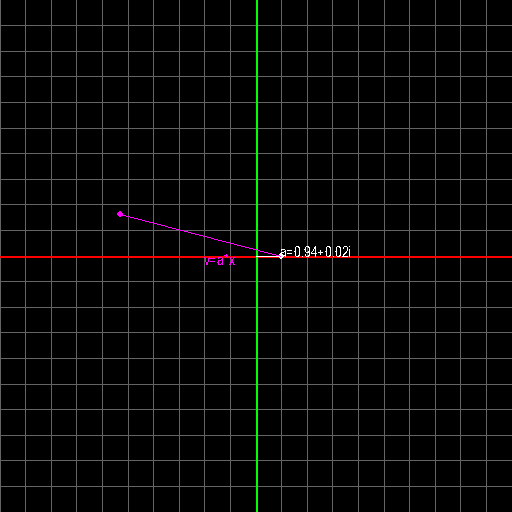Dla różnych wielokrotności 2πi otrzymujemy różne wyniki. Jeden jest bliski zeru, drógi utrzymał się na kole jednostkowym i pzebył ln(5) radiansów a trzeci eksplodował. Dla innych wielokrotności 2πi wynik albo jest jeszcze bliżej zera albo eksploduje jeszcze bardziej. Jeden wynik nie pokrywa się z drugim, więc 5i ma nieskończenie wiele rozwiązań
Pomnożenie x przez i ma efekt obrócenia kierunku przesuwania punktu a o 90°. Stąd prędkość która normalnie kierowałaby po osi liczbowej wprawiła po pomnożeniu przez i punkt a w ruch kołowy (rysunek 2)
Na rysunku 1 prędkość punktu a byłaby równa a * (ln(5)-2πi), pomnożona przez i jednak stała się a*(2π+ln(5)i). Wysoka część rzeczywista wyrażenia spowodowała, że wynik "eksplodował". Odwrotna sytułacja jest natomiast na rysunku 3. Tam prędkość wynosiłaby a * (ln(5)+2πi). Pomnożenie jej przez i zmieniło ją w a * (-2π+ln(5)i). Tutaj ujemna część rzeczywista prędkości zbliżyła wynik bardzo blisko 0
Na zakończenie dodam, że a może być wektorem a X macierzą. Gdyby przesówać wektor a przez jedną jednostkę czasu z prędkością X*a, gdzie X jest macierzą, otrzymalibyśmy taki sam wynik, co gdybyśmy wykonali mnożenie eX*a Gdzie X będące macierzą jest wykładnikiem, ale tego nie chciało mi się animować.
Matematyka jest dziwna